This section discusses the concepts of MonthCalendarAdv in some commonly used scenarios.
This section comprises the appearance settings under the following topics:
Border for a MonthCalendarAdv control can be in 2D or 3D modes. The below properties controls the border settings for the MonthCalendarAdv control.
|
Properties |
Description |
|
BorderStyle |
Specifies whether the control should have a 2D or a 3D border. The options are,
FixedSingle, Fixed3D and None (default). |
|
Border3DStyle |
Sets 3D border style for the MonthCalendarAdv control, when the BorderStyle=Fixed3D. The styles are,
Raised, RaisedOuter, RaisedInner, Sunken (default), SunkenOuter, SunkenInner, Etched, Bump, Adjust and Flat. |
|
BorderSides |
Specifies the sides of the control which can have a border. The sides options are,
Left, Top, Right, Bottom, Middle and All (default). |
|
BorderColor |
Specifies the 2D border color when BorderStyle="FixedSingle". |
|
[C#]
//Setting 3D border style this.monthCalendarAdv1.BorderStyle = System.Windows.Forms.BorderStyle.Fixed3D; //Setting "SunkenInner" 3D border style this.monthCalendarAdv1.Border3DStyle = System.Windows.Forms.Border3DStyle.SunkenInner; |
|
[VB.NET]
'Setting 3D border style Me.monthCalendarAdv1.BorderStyle = System.Windows.Forms.BorderStyle.Fixed3D 'Setting "SunkenInner" 3D border style Me.monthCalendarAdv1.Border3DStyle = System.Windows.Forms.Border3DStyle.SunkenInner |
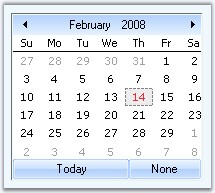
Figure 209: Border3DStyle = "SunkenInner"
 Note: MonthCalendarAdv.ThemedBorder
property should be set to false to make the 3D border setting effective. Refer
Visual
Settings.
Note: MonthCalendarAdv.ThemedBorder
property should be set to false to make the 3D border setting effective. Refer
Visual
Settings.
|
[C#]
//Setting border to "All" sides this.monthCalendarAdv1.BorderSides = System.Windows.Forms.Border3DSide.All; //Setting color for 2D border this.monthCalendarAdv1.BorderColor = System.Drawing.Color.DodgerBlue; |
|
[VB.NET]
'Setting border to "All" sides Me.monthCalendarAdv1.BorderSides = System.Windows.Forms.Border3DSide.All 'Setting color for 2D border this.monthCalendarAdv1.BorderColor = System.Drawing.Color.DodgerBlue |
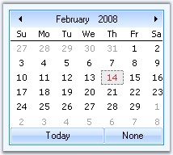
Figure 210: 2DBorderColor = "DodgerBlue"
See Also
Background Settings, Visual Settings
3.3.3.1.4.1.2 Background Settings
Background image for the MonthCalendarAdv is specified in BackgroundImage property.
|
[C#]
this.monthCalendarAdv1.BackgroundImage = ((System.Drawing.Image)(resources.GetObject("monthCalendarAdv1.BackgroundImage"))); this.monthCalendarAdv1.BackgroundImageLayout = System.Windows.Forms.ImageLayout.Stretch; |
|
[VB.NET]
Me.monthCalendarAdv1.BackgroundImage = DirectCast((resources.GetObject("monthCalendarAdv1.BackgroundImage")), System.Drawing.Image) Me.monthCalendarAdv1.BackgroundImageLayout = System.Windows.Forms.ImageLayout.Stretch |
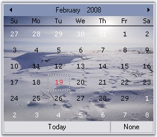
Figure 211: BackgroundImage for MonthCalendarAdv
See Also
Border Styles, Visual Settings
Themes for MonthCalendarAdv
Some sections of the MonthCalendarAdv control are themed by default. The below table list the properties which controls the themed behavior border, grid and scroll buttons.
|
MonthCalendarAdv Properties |
Description |
|
ThemedBorder |
Specifies whether the border of the control is themed. By default it is true. |
|
ThemedEnabledGrid |
Specifies whether the grid holding the days is themed or not. By default it is false. |
|
ThemedEnabledScrollButtons |
Specifies whether the scroll buttons are themed. It is set to true by default. |
|
[C#]
this.monthCalendarAdv1.ThemedBorder = true; this.monthCalendarAdv1.ThemedEnabledGrid = true; this.monthCalendarAdv1.ThemedEnabledScrollButtons = true; |
|
[VB.NET]
Me.monthCalendarAdv1.ThemedBorder = True Me.monthCalendarAdv1.ThemedEnabledGrid = True Me.monthCalendarAdv1.ThemedEnabledScrollButtons = True |
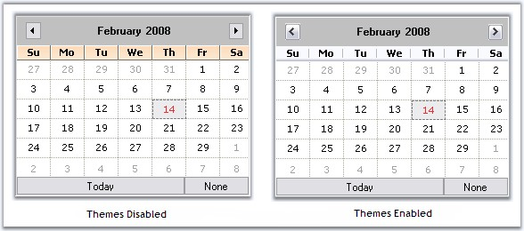
Figure 212: MonthCalendarAdv With and without Themes
Styles
MonthCalendarAdv supports the styles in the below table, which can be set through Style property.
|
MonthCalendarAdv Property |
Description |
|
Style |
Gets or Sets the visual style of the MonthCalendarAdv. The options are
Default OfficeXP Office2003 VS2005 Office2007
The default value is 'Default'. |
|
[C#]
// Sample code for setting Office2003 style for MonthCalendarAdv this.monthCalendarAdv1.Style = Syncfusion.Windows.Forms.VisualStyle.Office2003; |
|
[VB.NET]
' Sample code for setting Office2003 style for MonthCalendarAdv Me.monthCalendarAdv1.Style = Syncfusion.Windows.Forms.VisualStyle.Office2003 |
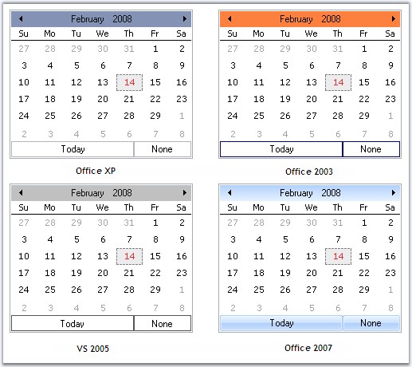
Figure 213: Styles Applied for MonthCalendarAdv Control
|
[C#]
//Sets the Color scheme as Silver when the style is Office2007 this.monthCalendarAdv1.Office2007Theme = Syncfusion.Windows.Forms.Office2007Theme.Silver; |
|
[VB.NET]
'Sets the Color scheme as Silver when the style is Office2007 Me.monthCalendarAdv1.Office2007Theme = Syncfusion.Windows.Forms.Office2007Theme.Silver |
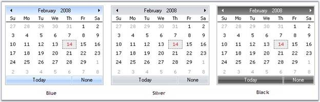
Figure 214: Office Color Schemes for MonthCalendarAdv Control
Custom Colors
We can also apply custom colors to the MonthCalendarAdv control by setting Office2007Theme to "Managed" and specifying the custom color through the ApplyManagedColors method as follows.
|
[C#]
this.monthCalendarAdv1.Office2007Theme = Syncfusion.Windows.Forms.Office2007Theme.Managed; Office2007Colors.ApplyManagedColors(this, Color.Orange); |
|
[VB.NET]
Me.monthCalendarAdv1.Office2007Theme = Syncfusion.Windows.Forms.Office2007Theme.Managed Office2007Colors.ApplyManagedColors(Me, Color.Orange) |
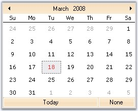
Figure 215: Custom Color = "Orange"
Note: Visual styles of the Today and None
button can be overridden by MonthCalendarAdv.TodayButton and
MonthCalendarAdv.NoneButton respectively. See Scroll
Buttons.
See Also
Border Styles, Background Settings
This section comprises the following:
In the MonthCalendarAdv control, the dates of a month is placed inside a grid and the dates are separated using grid lines.
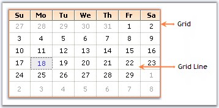
Figure 216: Grid with Dates Separated by Grid Lines
The below properties lets you to change the default appearance of the grid in the MonthCalendarAdv.
|
MonthCalendarAdv Properties |
Description |
|
GridBackColor |
Gets or Sets the back color of the Grid. |
|
GridLines |
Gets or Sets the style of the Grid lines. The options are
· NotSet · None · Dashed · Dotted · DashDot · DashDotDot · Solid · Standard
The default value is 'Dotted'. |
|
[C#]
this.monthCalendarAdv1.GridBackColor = System.Drawing.Color.FloralWhite; this.monthCalendarAdv1.GridLines = Syncfusion.Windows.Forms.Grid.GridBorderStyle.Dashed; |
|
[VB.NET]
Me.monthCalendarAdv1.GridBackColor = System.Drawing.Color.FloralWhite Me.monthCalendarAdv1.GridLines = Syncfusion.Windows.Forms.Grid.GridBorderStyle.Dashed |
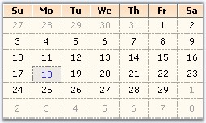
Figure 217: GridBackColor = "FloralWhite"; GridLines = "Dashed"
3.3.3.1.4.2.1.1 Header Settings
This section will walk you through the different properties used to customize the header portion of the MonthCalendarAdv control.
Gradient Background
Gradient background can be set for the header using the below properties.
|
MonthCalendarAdv Properties |
Description |
|
HeadGradient |
Specifies whether the header can show a gradient background. |
|
HeaderStartColor |
Sets the start color of the header gradient when HeaderGradient property is true. |
|
HeaderEndColor |
Sets the end color of the header gradient when HeaderGradient property is true. |
|
HeaderVerticalGradient |
When HeadGradient property is set to true, vertical gradient style will be applied to the header, by default. To change it to horizontal gradient style, set this property to false. |
|
[C#]
this.monthCalendarAdv1.HeadGradient = true; this.monthCalendarAdv1.HeaderVerticalGradient = true; this.monthCalendarAdv1.HeaderEndColor = System.Drawing.Color.SteelBlue; this.monthCalendarAdv1.HeaderStartColor = System.Drawing.Color.AliceBlue; |
|
[VB.NET]
Me.monthCalendarAdv1.HeadGradient = True Me.monthCalendarAdv1.HeaderVerticalGradient = True Me.monthCalendarAdv1.HeaderEndColor = System.Drawing.Color.SteelBlue Me.monthCalendarAdv1.HeaderStartColor = System.Drawing.Color.AliceBlue |
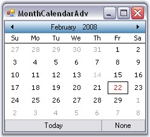
Figure 218: HeaderStartColor = "AliceBlue"; HeaderEndColor = "SteelBlue"
Foreground Settings
The font style and fore color of the header text can be specified through HeaderFont and HeadForeColor properties.
|
MonthCalendarAdv Properties |
Description |
|
HeaderFont |
Specifies the font of the header. |
|
HeaderForeColor |
Specifies the fore color of the header. |
|
[C#]
this.monthCalendarAdv1.HeaderFont = new System.Drawing.Font("Arial", 9F, System.Drawing.FontStyle.Bold); this.monthCalendarAdv1.HeadForeColor = System.Drawing.Color.Navy; |
|
[VB.NET]
Me.monthCalendarAdv1.HeaderFont = New System.Drawing.Font("Arial", 9F, System.Drawing.FontStyle.Bold) Me.monthCalendarAdv1.HeadForeColor = System.Drawing.Color.Navy |
Figure 219: HeaderFont = "Arial, 9, Bold"; HeaderForeColor="Navy"
Height and Image for Header
The height of the header can be increased or decreased using HeaderHeight property. Header can also host an image in its background using HeaderImage property.
|
MonthCalendarAdv Properties |
Description |
|
HeaderHeight |
Specifies the height of the header. Default value is 32 for Default Style and for other styles it is 20. |
|
HeaderImage |
Specifies the image of the header. |
|
[C#]
this.monthCalendarAdv1.HeaderImage = ((System.Drawing.Image)(resources.GetObject("monthCalendarAdv1.HeaderImage"))); this.monthCalendarAdv1.HeaderHeight = 30; |
|
[VB.NET]
Me.monthCalendarAdv1.HeaderImage = DirectCast((resources.GetObject("monthCalendarAdv1.HeaderImage")), System.Drawing.Image) Me.monthCalendarAdv1.HeaderHeight = 30 |
Figure 220: HeaderHeight = "30"
MonthCalendarAdv control can display unique week numbers for all the weeks in a year. This section discusses the properties which can customize the appearance of the week numbers.
Foreground Settings
By default, week numbers will not be shown in the calendar. ShowWeekNumbers property should be set to true to display the week numbers. The font and fore color can be set using the below properties.
|
MonthCalendarAdv Properties |
Description |
|
WeekFont |
Gets or sets the font of the week numbers column. |
|
WeekTextColor |
Gets or sets the text color for week numbers column. |
|
[C#]
this.monthCalendarAdv1.ShowWeekNumbers = true; this.monthCalendarAdv1.WeekFont = new System.Drawing.Font("Courier New", 9F, System.Drawing.FontStyle.Bold, System.Drawing.GraphicsUnit.Point, ((byte)(0))); this.monthCalendarAdv1.WeekTextColor = System.Drawing.Color.Blue; |
|
[VB.NET]
Me.monthCalendarAdv1.ShowWeekNumbers = True Me.monthCalendarAdv1.WeekFont = New System.Drawing.Font("Courier New", 9F, System.Drawing.FontStyle.Bold, System.Drawing.GraphicsUnit.Point, CByte((0))) Me.monthCalendarAdv1.WeekTextColor = System.Drawing.Color.Blue |
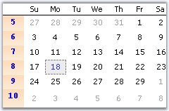
Figure 221: WeekFont = "Courier new, 9, Bold"; WeekTextColor = "Blue"
Gradient Background
By default the week numbers column has a gradient background. To customize the background manually, use WeekInterior property.
|
[C#]
this.monthCalendarAdv1.WeekInterior = new Syncfusion.Drawing.BrushInfo(Syncfusion.Drawing.GradientStyle.Vertical, System.Drawing.Color.AliceBlue, System.Drawing.Color.LightSteelBlue); |
|
[VB.NET]
Me.monthCalendarAdv1.WeekInterior = New Syncfusion.Drawing.BrushInfo(Syncfusion.Drawing.GradientStyle.Vertical, System.Drawing.Color.AliceBlue, System.Drawing.Color.LightSteelBlue) |
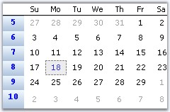
Figure 222: Custom Gradient Background for Week Numbers
MonthCalendarAdv has properties to customize the days displayed in the calendar. This section discusses those properties.
Foreground Settings
The below properties deals with the foreground appearance of the dates.
|
MonthCalendarAdv Properties |
Description |
|
DayNamesColor |
Specifies the fore color of the day names. |
|
DayNamesFont |
Specifies the font style of the day names. |
|
DaysFont |
Specifies the font style of the days / dates. |
|
DaysColor |
Specifies the fore color of the day names. |
|
[C#]
this.monthCalendarAdv1.DayNamesFont = new System.Drawing.Font("Courier New", 9F, System.Drawing.FontStyle.Bold); this.monthCalendarAdv1.DaysNamesColor = Color.Black; this.monthCalendarAdv1.DaysColor = System.Drawing.SystemColors.HotTrack; this.monthCalendarAdv1.DaysFont = new System.Drawing.Font("Courier New", 8.25F, System.Drawing.FontStyle.Regular); |
|
[VB.NET]
Me.monthCalendarAdv1.DayNamesFont = New System.Drawing.Font("Courier New", 9F, System.Drawing.FontStyle.Bold) Me.monthCalendarAdv1.DaysNamesColor = Color.Black Me.monthCalendarAdv1.DaysColor = System.Drawing.SystemColors.HotTrack Me.monthCalendarAdv1.DaysFont = New System.Drawing.Font("Courier New", 8.25F, System.Drawing.FontStyle.Regular) |
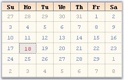
Figure 223: MonthCalendarAdv with Customized Days and Day Names
Height and Day Names Format
The height of the day header and the day name formats are specified using below properties.
|
MonthCalendarAdv Properties |
Description |
|
DayNamesHeight |
Sets the height of the days header. Default value is 17. |
|
UseShortestDayNames |
Specifies whether shortest day names are used or not. by default it is true. |
|
[C#]
this.monthCalendarAdv1.DayNamesHeight = 22; this.monthCalendarAdv1.UseShortestDayNames = false; |
|
[VB.NET]
Me.monthCalendarAdv1.DayNamesHeight = 22 Me.monthCalendarAdv1.UseShortestDayNames = False |
Figure 224: DayNamesHeight = "22" and without ShortDayNames
Gradient Background for Day Header
By default the day's header has a gradient background. We can change the default background style using DaysHeaderInterior property.
|
[C#]
this.monthCalendarAdv1.DaysHeaderInterior = new Syncfusion.Drawing.BrushInfo(Syncfusion.Drawing.GradientStyle.Vertical, System.Drawing.Color.AntiqueWhite, System.Drawing.Color.SandyBrown); |
|
[VB.NET]
Me.monthCalendarAdv1.DaysHeaderInterior = New Syncfusion.Drawing.BrushInfo(Syncfusion.Drawing.GradientStyle.Vertical, System.Drawing.Color.AntiqueWhite, System.Drawing.Color.SandyBrown) |
Figure 225: Custom Gradient Style for DaysHeader Background
The fore color for Today's date is set using TodayFontColor property. Using Today button at the bottom of the control, today's date can be focussed. See Buttons for details.
|
[C#]
this.monthCalendarAdv1.TodayFontColor = System.Drawing.Color.Crimson; |
|
[VB.NET]
Me.monthCalendarAdv1.TodayFontColor = System.Drawing.Color.Crimson |
The today's date for the below calendar image is "eighteenth".
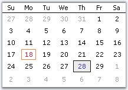
Figure 226: TodayFontColor = "Crimson"
See Also
This section discusses the properties which controls the appearance and behavior of the dates (contents) inside the grid cells.
Highlighting the dates
We can highlight the selected date using HighlightColor property.
|
[C#]
this.monthCalendarAdv1.HighlightColor = System.Drawing.Color.Blue; |
|
[VB.NET]
Me.monthCalendarAdv1.HighlightColor = System.Drawing.Color.Blue |
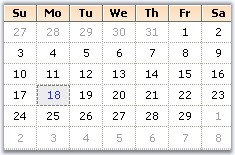
Figure 227: HighlightColor = "Blue"
Alignment and Wrapping of text
The alignment and text wrapping of the dates inside the grid cells is controlled using the below properties.
|
MonthCalendarAdv Properties |
Description |
|
HorizontalAlignment |
Specifies the horizontal alignment of the dates inside a grid cell. The options are,
Left, Center and Right. |
|
VerticalAlignment |
Specifies the vertical alignment of the dates inside a grid cell. The options are,
Top, Middle and Bottom. |
|
WrapText |
Indicates whether the grid can wrap the text inside grid cells. By default, it is false. |
|
[C#]
this.monthCalendarAdv1.HorizontalAlignment = Syncfusion.Windows.Forms.Grid.GridHorizontalAlignment.Right; this.monthCalendarAdv1.VerticalAlignment = Syncfusion.Windows.Forms.Grid.GridVerticalAlignment.Top; this.monthCalendarAdv1.WrapText = true; |
|
[VB.NET]
Me.monthCalendarAdv1.HorizontalAlignment = Syncfusion.Windows.Forms.Grid.GridHorizontalAlignment.Right Me.monthCalendarAdv1.VerticalAlignment = Syncfusion.Windows.Forms.Grid.GridVerticalAlignment.Top Me.monthCalendarAdv1.WrapText = True |
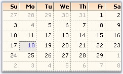
Figure 228: HorizontalAlignment = "Right"; VerticalAlignment = "Top"
See Also
The MonthCalendarAdv control contains the below buttons.
· LeftScrollButton,
· RightScrollButton,
· 'Today' button and
· 'None' button.
To know about the placement of these buttons in the control, refer MonthCalendarAdv topic. Left and Right scroll buttons at the top of the control can have custom images. See Scroll Buttons for details.
Today and None buttons are displayed at the bottom of the calendar and they can be customized to set background image and font styles. This section will discuss the properties which controls the appearance and behavior of the MonthCalendarAdv.
|
MonthCalendarAdv Properties |
Description |
|
TodayButton |
Clicking this button at run time will move the focus to today's date in the calendar. |
|
NoneButton |
Clicking this button at run time, will remove the focus of the date in the calendar. |
|
BottomHeight |
The height of the bottom which contains the Today and None buttons are changed using this property. Default value is 20. |
Customizing Today and None Buttons
The "Today" and "None" buttons are like Essential Tools ButtonAdv controls and they support all the properties of ButtonAdv control. You can access those properties using MonthCalendarAdv.NoneButton.Visible which controls the visibility (for example).
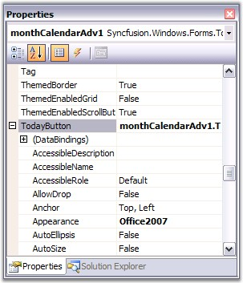
Figure 229: Accessing Properties of TodayButton in MonthCalendarAdv PropertyGrid
|
[C#]
//Hides the Today and None Buttons monthCalendarAdv1.TodayButton.Visible=false; monthCalendarAdv1.NoneButton.Visible=false; |
|
[VB.NET]
'Hides the Today and None Buttons monthCalendarAdv1.TodayButton.Visible=False monthCalendarAdv1.NoneButton.Visible=False |
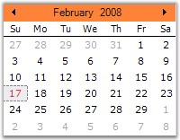
Figure 230: MonthCalendar without Today and None Button
See Also
3.3.3.1.4.2.4.1 Scroll Buttons
Scroll Button images
The default scroll button images can be replaced with custom images using the LeftScrollButtonImage and RightScrollButtonImage properties. The properties related to scroll buttons are as follows.
|
MonthCalendarAdv Properties |
Description |
|
LeftScrollButtonImage |
Specifies Image for left scroll button. |
|
RightftScrollButtonImage |
Specifies Image for right scroll button. |
|
StretchScrollImage |
Specifies whether the image for scroll buttons is stretched to fit the size of the scroll button. |
|
ScrollButtonSize |
Specifies the size of the scroll buttons. |
|
[C#]
this.monthCalendarAdv1.LeftScrollButtonImage = ((System.Drawing.Image)(resources.GetObject("monthCalendarAdv1.LeftScrollButtonImage"))); this.monthCalendarAdv1.RightScrollButtonImage = ((System.Drawing.Image)(resources.GetObject("monthCalendarAdv1.RightScrollButtonImage"))); this.monthCalendarAdv1.ScrollButtonSize = new System.Drawing.Size(30, 25); this.monthCalendarAdv1.StretchScrollImage = false; |
|
[VB.NET]
Me.monthCalendarAdv1.LeftScrollButtonImage = DirectCast((resources.GetObject("monthCalendarAdv1.LeftScrollButtonImage")), System.Drawing.Image) Me.monthCalendarAdv1.RightScrollButtonImage = DirectCast((resources.GetObject("monthCalendarAdv1.RightScrollButtonImage")), System.Drawing.Image) Me.monthCalendarAdv1.ScrollButtonSize = New System.Drawing.Size(30, 25) Me.monthCalendarAdv1.StretchScrollImage = False |
Figure 231: Custom Images for Scroll Buttons
This section covers the below topics:
3.3.3.1.4.3.1 Selecting a Date
Range of Selection
The minimum and maximum date selectable by the calendar can be specified using MinValue and MaxValue properties. (This is similar to MinDate and MaxDate of windows MonthCalendar control).
|
MonthCalendarAdv Properties |
Description |
|
Value |
Indicates the current value of the calendar. By default this value will be the current date. |
|
MinValue |
Specifies the minimum value selectable by the calendar. |
|
MaxValue |
Specifies the maximum value selectable by the calendar. |
|
[C#]
this.monthCalendarAdv1.Value = new System.DateTime(2008, 2, 19); this.monthCalendarAdv1.MinValue = new System.DateTime(2000, 2, 21, 0, 0, 0, 0); this.monthCalendarAdv1.MaxValue = new System.DateTime(2008, 2, 21, 0, 0, 0, 0); |
|
[VB.NET]
Me.monthCalendarAdv1.Value = New Date(2008, 2, 19) Me.monthCalendarAdv1.MinValue = New System.DateTime(2000, 2, 21, 0, 0, 0, 0) Me.monthCalendarAdv1.MaxValue = New System.DateTime(2008, 2, 21, 0, 0, 0, 0) |
When we drag and drop a MonthCalendarAdv control, current system date, i.e, today's date will be selected by default. To change the selected date, DateTime Collection Editor is used, which is invoked using SelectedDates property.
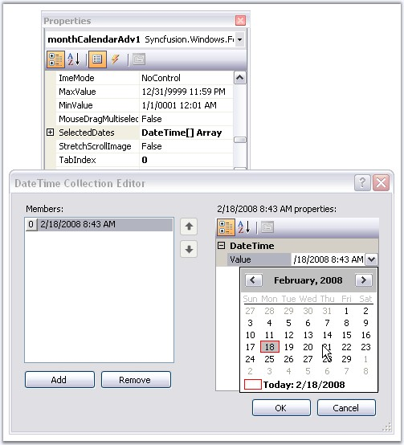
Figure 232: Accessing DateTime Collection Editor using SelectedDates Property
Note: It is possible to set color for the
highlighted date. See Text Settings topic for details.
Multiple Selection at run time
It is possible to enable multiple selection of the dates at run time. The below properties enables multiple selection.
|
MonthCalendarAdv Properties |
Description |
|
AllowMultipleSelection |
Indicates whether multiple selection of dates is allowed. i.e, by holding the Ctrl key and selecting the dates using mouse. |
|
MouseDragMultiSelect |
Indicates whether selection of dates are allowed using mouse down and dragging at run time. |
|
[C#]
this.monthCalendarAdv1.AllowMultipleSelection = true; this.monthCalendarAdv1.MouseDragMultiselect = true; |
|
[VB.NET]
this.monthCalendarAdv1.AllowMultipleSelection = True Me.monthCalendarAdv1.MouseDragMultiselect = True |
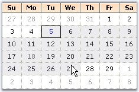
Figure 233: Selection of Dates by Mouse Dragging
Select Date Range Programmatically
Using the SelectedDates property, range of dates can be selected in the MonthCalendarAdv control. The dates should be given in array format using the DateTime Array list.
|
[C#]
DateTime[] dateTimes = new DateTime[] { new DateTime(2010, 11, 2), new DateTime(2010, 11, 3) }; DateTime[] dateTotal = new DateTime[] { }; |
|
[VB.NET]
Dim dateTimes As DateTime() = New DateTime() {New DateTime(2010, 11, 2), New DateTime(2010, 11, 3)} Me.monthCalendarAdv1.SelectedDates = dateTimes |
Dates should be specified in the DataTime Array List. Then the DateTime Array list should be declared to the SelectedDates Property. This would select the dates that are in the DateTime Array list.
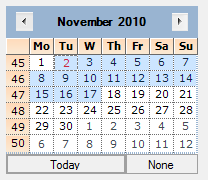
Figure 234: Select Date Range Programmatically
Note: Date range should be specified
manually in the DateTime Array list.
At run time, you have options to move to the next month or previous month using the left or right scroll buttons and also using the context menu displayed, when you click on the month of the calendar. To specify images for individual months in the menu, use MonthImageList property.
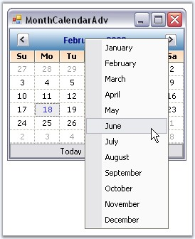
Figure 235: Navigating to other Months using Context Menu
|
[C#]
this.monthCalendarAdv1.MonthImageList = this.imageList1; |
|
[VB.NET]
Me.monthCalendarAdv1.MonthImageList = Me.imageList1 |
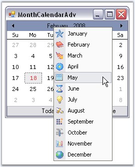
Figure 236: Image icons for the Months at Run Time
Foreground Color for Inactive Months
The below property sets the color for the inactive months.
|
MonthCalendarAdv Properties |
Description |
|
InactiveMonthColor |
The previous or next month dates of the current month will be inactive in the MonthCalendarAdv control. This property specifies color of those inactive month dates. |
|
[C#]
this.monthCalendarAdv1.InactiveMonthColor = System.Drawing.Color.InactiveCaptionText; |
|
[VB.NET]
Me.monthCalendarAdv1.InactiveMonthColor = System.Drawing.Color.InactiveCaptionText |
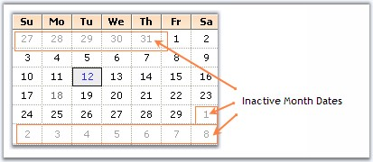
Figure 237: InactiveMonthColor = "InactiveCaptionText"
First Day of the Week
MonthCalendarAdv lets you specify the first day to be displayed in a week using FirstDayOfWeek property. Default will be Sunday.
|
[C#]
this.monthCalendarAdv1.FirstDayOfWeek = Day.Monday; |
|
[VB.NET]
Me.monthCalendarAdv1.FirstDayOfWeek = Day.Monday |
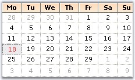
Figure 238: First Day of the Week set to "Monday"
3.3.3.1.4.3.3 Interactive Features
This section covers the below topics:
This section deals with replacing MonthCalendarAdv 'Go to Today' ContextMenu with a Custom Context Menu. At run-time, you can right click any calendar date and go to the today date using 'Go to Today' ContextMenu.
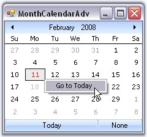
Figure 239: 'Go to Today' Context Menu
This is the default context menu. To replace this with a custom context menu, you need to derive a Custom MonthCalendarAdv from the existing one and override the InitializeGrid so that the GetInternalGridControl method can be used to access the ContextMenu and replace it with a custom contextMenu.
It can be done programmatically using the below code snippet.
|
[C#]
//Declaring and Initializing the calendar, Context menu and menu item private CustomMonthCalendarAdv monthCalendarAdv1; private System.Windows.Forms.MenuItem menuItem1; private System.Windows.Forms.ContextMenu contextMenuStrip1; this.contextMenuStrip1 = new System.Windows.Forms.ContextMenu(); this.menuItem1 = new System.Windows.Forms.MenuItem(); this.monthCalendarAdv1 = new MonthCalendar.Form1.CustomMonthCalendarAdv();
this.contextMenuStrip1.MenuItems.AddRange(new System.Windows.Forms.MenuItem[] {this.menuItem1}); this.menuItem1.Text = "Go To Tomorrow"; this.menuItem1.Click += new System.EventHandler(this.menuItem1_Click);
//Override the internal grid context menu using the custom context menu private void Form1_Load_1(object sender, EventArgs e) { this.monthCalendarAdv1.GetInternalGridControl().ContextMenu = this.contextMenuStrip1; }
//Focus moves to tomorrow's date, when menu item is clicked private void menuItem1_Click(object sender, System.EventArgs e) { this.monthCalendarAdv1.Value = DateTime.Today.AddDays(1); }
//Defining CustomMonthCalendarAdv class public class CustomMonthCalendarAdv : Syncfusion.Windows.Forms.Tools.MonthCalendarAdv { private Syncfusion.Windows.Forms.Tools.CalendarGrid internalGrid; // Overrides the InitializeGrid. protected override void InitializeGrid(ref Syncfusion.Windows.Forms.Tools.CalendarGrid grid) { base.InitializeGrid(ref grid); internalGrid = grid; } // Returns the internal grid. public Syncfusion.Windows.Forms.Tools.CalendarGrid GetInternalGridControl() { return internalGrid; } } |
|
[VB.NET]
'Declaring and Initializing the calendar, Context menu and menu item Private monthCalendarAdv1 As CustomMonthCalendarAdv Private menuItem1 As System.Windows.Forms.MenuItem Private contextMenuStrip1 As System.Windows.Forms.ContextMenu Me.contextMenuStrip1 = New System.Windows.Forms.ContextMenu() Me.menuItem1 = New System.Windows.Forms.MenuItem() Me.monthCalendarAdv1 = New MonthCalendar.Form1.CustomMonthCalendarAdv() Me.contextMenuStrip1.MenuItems.AddRange(New System.Windows.Forms.MenuItem() {Me.menuItem1}) Me.menuItem1.Text = "Go To Tomorrow" AddHandler Me.menuItem1.Click, AddressOf Me.menuItem1_Click
'Override the internal grid context menu using the custom context menu Private Sub Form1_Load_1(ByVal sender As Object, ByVal e As EventArgs) Me.monthCalendarAdv1.GetInternalGridControl().ContextMenu = Me.contextMenuStrip1 End Sub
'Focus moves to tomorrow's date, when menu item is clicked. Private Sub menuItem1_Click(ByVal sender As Object, ByVal e As System.EventArgs) Me.monthCalendarAdv1.Value = DateTime.Today.AddDays(1) End Sub
'Defining CustomMonthCalendarAdv class Public Class CustomMonthCalendarAdv Inherits Syncfusion.Windows.Forms.Tools.MonthCalendarAdv Private internalGrid As Syncfusion.Windows.Forms.Tools.CalendarGrid ' Overrides the InitializeGrid. Protected Overloads Overrides Sub InitializeGrid(ByRef grid As Syncfusion.Windows.Forms.Tools.CalendarGrid) MyBase.InitializeGrid(grid) internalGrid = grid End Sub ' Returns the internal grid. Public Function GetInternalGridControl() As Syncfusion.Windows.Forms.Tools.CalendarGrid Return internalGrid End Function End Class |
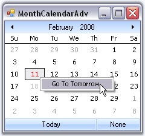
Figure 240: MonthCalendarAdv with Custom Context Menu
Tooltips can be set using DateCellQueryInfo event.
MonthCalendarAdv supports globalization through MonthCalendarAdv.Culture property.
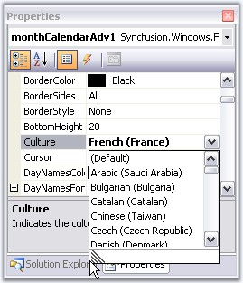
Figure 241: Selecting Culture Through PropertyGrid
|
[C#]
this.monthCalendarAdv1.Culture = new System.Globalization.CultureInfo("fr-FR"); |
|
[VB.NET]
Me.monthCalendarAdv1.Culture = New System.Globalization.CultureInfo("fr-FR") |
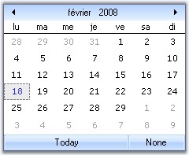
Figure 242: MonthCalendar with Culture French (France)